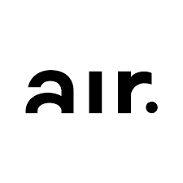

Academic
-
2021 - 2024
King's College London - School of Biomedical Engineering & Imaging Sciences, UK
PhD in Surgical and Interventional Egnieering
Research Project in Surgical Data Science: "Surgical phase recognition and video labelling to improve outcomes in robot assisted radical prostatectomy"
Activities and Societies: Robotics Society, Surgical Society, AI Society.
Year 1:
- Robotics
- Medical Imaging
- Literature review
- Industry Collaboration
- Surgical Data Science
- Summer School (Imperial, ETH Zurich)
2019 - 2020
University of Surrey - School of Electrical and Electronical Engineering, UK
MSc in Computer Vision, Robotics and Machine Learning, First class
MSc Thesis: "Predicting Breast Cancer malignancy on X-rays using Deep Learning"
Activities and Societies: Hockey Men's First Team, Robotics group.
First semester:
- Computer Vision
- Pattern Recognition
- Internet of Things
- Speech and Audio Processing
- Satellite Remote Sensing
Second semester:
- Robotics
- Deep Learning
- Image processing
- Advanced Signal Processing
- AI and AI programming
2017 - 2019
University Nova of Lisbon - Information Managment School, Portugal
MSc in Data Science and Advanced Analytics, Distinction
MSc Thesis: "French Government Transparency in Healthcare sector: Building an ETL and BI tool."
Activities and Societies: Hockey Men's First Team.
First semester:
- Machine Learning
- Data Mining
- Big Data
- Data Warehouse
- Descriptive Statistics
Second semester:
- Deep Learning
- Business Intelligence
- Inferential Analytics
- Evolutionary Programming
- Predictive Models
2013 - 2017
ICHEC Brussels Business School, Belgium
BSc Business Administration, Economics and Management
Activities and Societies: Entrepreneurship Team.
First and Second years:
- Economics
- Management
- Physics
- Chemistry
- Accounting
- Mathematics
- Statistics
- English and Dutch
- Micro/Macro-Economy
Third year:
- Operational Research
- Advanced Statistics
- Econometrics
- Computer Science
- Private and Public Law
- Psychology
- Analytical Accounting
- Marketing
- Finance
Industry
-
June 2021 - Present
Research Scientist in Computer Vision at KCL, London
Researcher in Surgical Data Science in the Surgical and Interventional Engineering lab.
Our state-of-the-art labs and clinical-research facilities are embedded in St Thomas’ Hospital in the heart of London where we can ensure our research projects are fully aligned with current clinical practice.
Long-term collaborations with global MedTech companies and new partnerships with innovative start-ups ensure multiple pathways to translation.
Website: : Innovation in surgical technology through engineering and clinical integration. -
Septembre 2020 - December 2020
Deep Learning Reseach Scientist - Radiomics, Belgium
Belgian scale-up company using artificial intelligence for diagnostics, detailed therapy evaluation, and sensitive prediction of treatment effect in oncology.
I worked on machine learning and deep learning projects leveraging techniques such as medical image segmentation and classification for image-guided therapy and diagnostic imaging.
Mission to enable the right diagnosis & treatment for the right patient through quantitative imaging and machine learning.
Website: Radiomics.bio -
September 2018 - March 2019
Data Scientist intern - Deloitte Technology and Analytics, Paris
Part of the Data Science and Analytics team, I developed predictive models using Machine Learning algorithms for a French leading pharmaceutical company.
Additionally, I built an end-to-end data integration tool for consistent and reliable business intelligence decision support.
➢ Elaboration of specifications with the client.
➢ Technology choices.
➢ Project management.
➢ Client relation.
➢ Python analytics for CAC40 companies.
➢ Agile software design and delivery.
➢ Consulting services.
➢ Deployment management.
✹ Technologies: Python, Git, Docker, SQL, C#, Microsoft SSMS & SSIS, Tableau.
✹ Environnement : Linux
-

July 2016 - September 2016
Data Scientist intern - Air Brussels, Belgium
I developed advanced analytics and predictive models for top industry players.
➢ Customer segmentation for targeted marketing.
➢ Churn prediction.
➢ Sales forecasting.
➢ Project developer.
➢ Market analysis reporting.
➢ Launching new digital campaigns.
✹ Technologies: Excel, , SQL, Python, PowerBI.
✹ Environnements: Linux, Windows.
Skills
Programming
Python # Scikit-Learn, TensorFlow, OpenCV, PyPI.
Others # MATLAB, ROS, C++, R, C#.
Web development # HTML, CSS, JavaScript.
Databases # SQL, Hadoop, SSMS, SSIS.
Tools and Technologies
Git
Docker
Jupyter
VS Code
RStudio
Linux / Windows
Languages
🇫🇷 French # Native
🇬🇧 English # Fluent
ɴʟ Dutch # Fluent
🇪🇸 Spanish # Intermediate
ᴘᴛ Portuguese # Basics